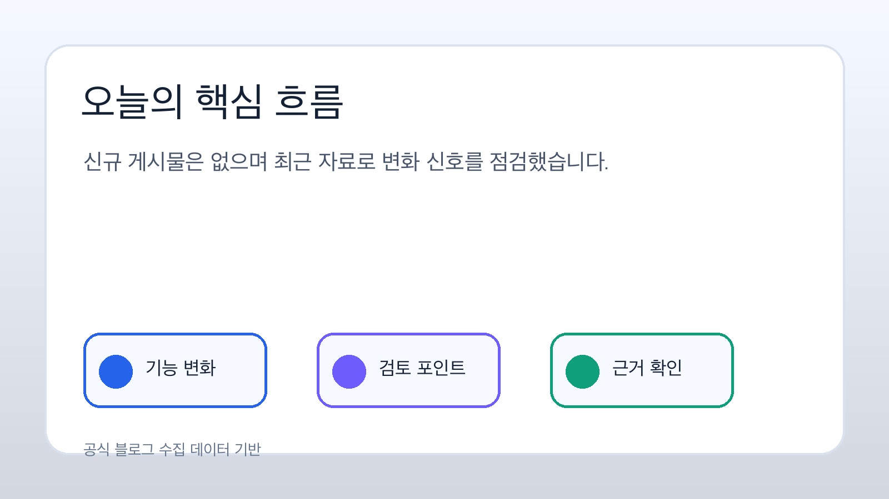
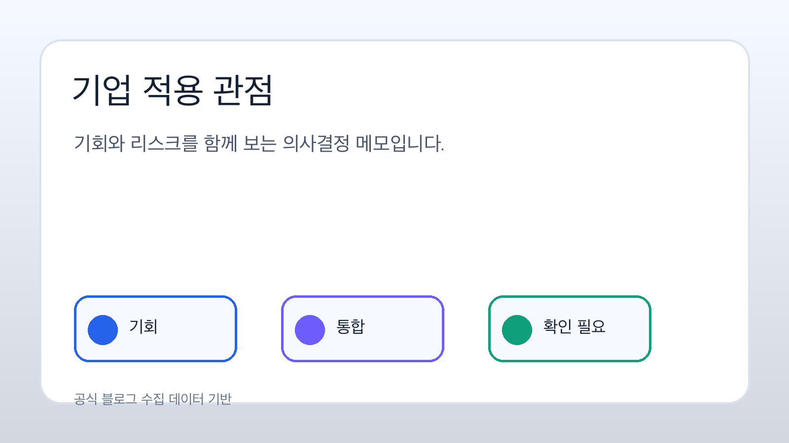
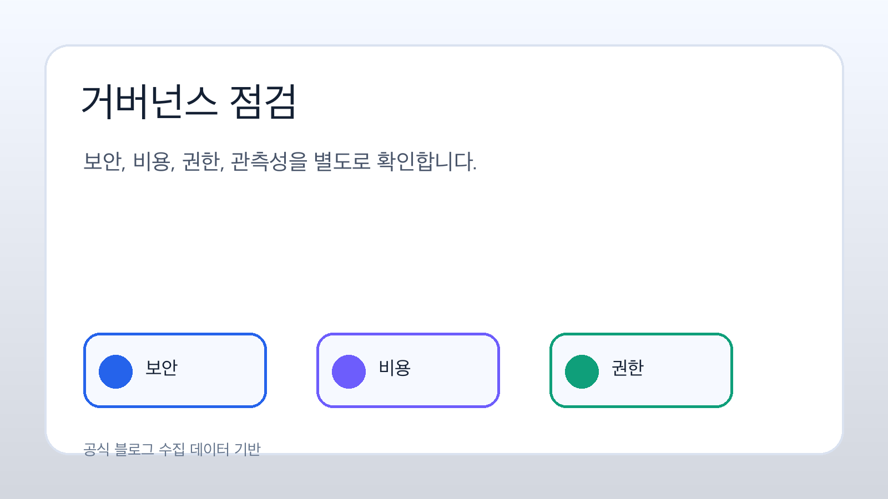

출처 1
생성형 인공지능 추론을 세부 지표와 클라우드워치 대시보드로 점검하는 방법
원문 본문에서 확인된 세부 내용은 해당 기능의 적용 조건, 지표 확인 방식, 데이터 연결 흐름을 중심으로 구성되어 있습니다. 실제 적용 전에는 리전 제공 여부, 권한 모델, 비용 영향을 함께 검토해야 합니다.
주요 기술: 공식 블로그 원문 링크에서 세부 서비스명을 확인해야 합니다.
원문 확인이번 브리핑은 아마존웹서비스 한국 기술 블로그, 뉴스 블로그, 머신러닝 블로그의 피드와 원문 링크를 기준으로 수집한 자료만 사용해 작성했습니다. 근거가 약한 부분은 확인 필요로 표시했습니다.
핵심 메시지: 오늘 확인된 자료에서는 생성형 인공지능 추론을 세부 지표와 클라우드워치 대시보드로 점검하는 방법; 어도비 마케팅 에이전트와 아마존 퀵 기반 인사이트로 캠페인 업무 흐름을 단축하는 방법; 아마존 베드록 에이전트코어의 웹 검색 기능 소개 흐름이 관찰됩니다. 기업 의사결정자는 기능 발표 자체보다 리전 제공 여부, 기존 보안·비용 통제, 데이터 접근 권한과 관측성 요구사항을 함께 검토해야 합니다.

수집 문서의 주요 기술 목록에서는 인공지능 추론 관측성, 마케팅 업무 인사이트, 에이전트 웹 검색과 같은 주제가 확인됩니다. 이는 애플리케이션, 데이터 검색, 보안 검토, 관측성 같은 실무 기능과 연결되는 발표가 많다는 뜻입니다.
에이전트와 검색, 지식 기반, 스토리지 맥락을 다루는 글은 데이터 원천의 신뢰도와 권한 모델을 함께 확인해야 함을 보여줍니다. 단순 기능 도입보다 접근 제어와 감사 가능성이 의사결정의 핵심입니다.
컴퓨팅, 추론, 관측성 관련 발표는 처리 성능 개선과 비용 구조 변화가 함께 발생할 수 있음을 시사합니다. 실제 업무 부하 기준의 검증 없이는 효과를 단정하기 어렵습니다.

업무별 데이터 맥락을 활용한 자동화와 검색 품질 개선 가능성이 있습니다. 다만 각 기능의 국내 리전 제공 여부와 개인정보·산업별 규제 적합성은 별도 확인이 필요합니다.
에이전트, 웹 검색, 지식 기반 기능은 외부 정보와 내부 데이터가 만나는 지점에서 출처 신뢰성, 접근 권한, 감사 로그 요구가 커집니다.
비용 모델, 추론 지연 시간, 장애 대응, 데이터 보존 정책, 모델·도구 호출 기록을 파일럿 설계 단계에서 확인해야 합니다.
원문 본문에서 확인된 세부 내용은 해당 기능의 적용 조건, 지표 확인 방식, 데이터 연결 흐름을 중심으로 구성되어 있습니다. 실제 적용 전에는 리전 제공 여부, 권한 모델, 비용 영향을 함께 검토해야 합니다.
주요 기술: 공식 블로그 원문 링크에서 세부 서비스명을 확인해야 합니다.
원문 확인원문 본문에서 확인된 세부 내용은 해당 기능의 적용 조건, 지표 확인 방식, 데이터 연결 흐름을 중심으로 구성되어 있습니다. 실제 적용 전에는 리전 제공 여부, 권한 모델, 비용 영향을 함께 검토해야 합니다.
주요 기술: 공식 블로그 원문 링크에서 세부 서비스명을 확인해야 합니다.
원문 확인원문 본문에서 확인된 세부 내용은 해당 기능의 적용 조건, 지표 확인 방식, 데이터 연결 흐름을 중심으로 구성되어 있습니다. 실제 적용 전에는 리전 제공 여부, 권한 모델, 비용 영향을 함께 검토해야 합니다.
주요 기술: 공식 블로그 원문 링크에서 세부 서비스명을 확인해야 합니다.
원문 확인| 출처 | 문서 | 관찰 기술 | 이번 브리핑 반영 상태 |
|---|---|---|---|
| 아마존웹서비스 머신러닝 블로그 | 생성형 인공지능 추론을 세부 지표와 클라우드워치 대시보드로 점검하는 방법 | 생성형 인공지능 추론 관측성 | 보조 참고 |
| 아마존웹서비스 머신러닝 블로그 | 어도비 마케팅 에이전트와 아마존 퀵 기반 인사이트로 캠페인 업무 흐름을 단축하는 방법 | 마케팅 인사이트와 대화형 업무 흐름 | 보조 참고 |
| 아마존웹서비스 머신러닝 블로그 | 아마존 베드록 에이전트코어의 웹 검색 기능 소개 | 에이전트 웹 검색과 지식 확장 | 보조 참고 |

원문 링크, 공식 문서, 리전별 서비스 표를 함께 확인해 발표 내용과 실제 사용 가능 상태를 분리합니다.
대표 업무 한두 개를 선정해 데이터 접근권한, 응답 품질, 관측성, 비용을 동시에 측정합니다.
모델 호출, 외부 검색, 지식 기반 업데이트, 로그 보존에 대한 승인 기준을 먼저 문서화합니다.
신규 저장 문서가 없어 최근 24시간 이내 로컬 아마존웹서비스 마크다운을 보조 입력으로 사용했습니다.
확인한 피드 항목 수: 34개 · 신규 저장 수: 0개 · 브리핑 입력 문서 수: 3개